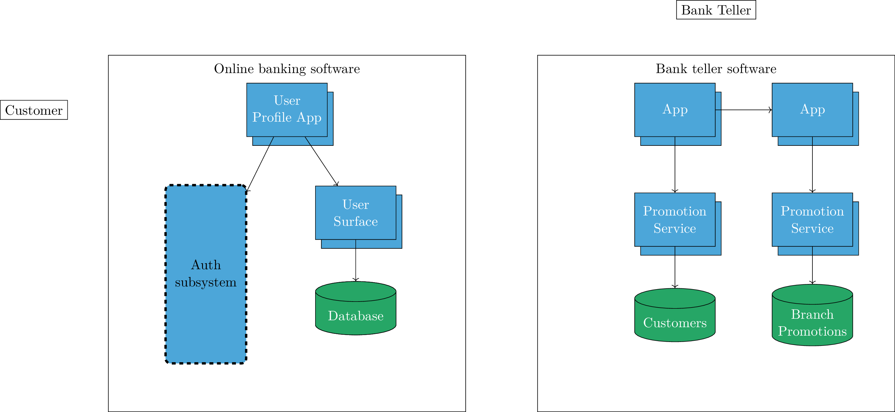

\documentclass[tikz,11pt]{standalone}
\usepackage{tikz}
\usetikzlibrary{shapes.geometric,shapes.symbols,fit,positioning,shadows}
\usetikzlibrary{arrows, arrows.meta, backgrounds, calc, shapes.misc, positioning}
\begin{document}
\tikzset{
purpleBox/.style n args={3}{
text centered, fill=purpleVue, minimum width = #1, minimum height= #2, text=white,
text width = #3,
rounded corners
},
redBox/.style n args={3}{
text centered, fill=redVue, minimum width = #1, minimum height= #2, text=white,
text width = #3,
rounded corners
},
orangeBox/.style n args={3}{
fill=orangeVue, minimum width = #1, minimum height= #2, text=white,
text centered,
rounded corners
},
greenCircle/.style n args={3}{
fill=greenVue, minimum width = #1, minimum height= #2, text=white,
text centered,
circle
},
lineCustom/.style={
very thick,
color=gray,
dotted,
shorten <=2pt,
shorten >=2pt
},
arrowCustom/.style={
>=triangle 60,
->,
very thick,
color=gray,
dotted
},
database/.style={
cylinder,
cylinder uses custom fill,
cylinder body fill=greenVue,
cylinder end fill=greenVue,
shape border rotate=90,
aspect=0.25,
draw
}
}
\definecolor{purpleVue}{rgb}{0.6,0.5,0.9}
\definecolor{orangeVue}{rgb}{0.975,0.7,0.2}
\definecolor{greenVue}{rgb}{0.15,0.65,0.4}
\definecolor{redVue}{rgb}{0.95,0.45,0.55}
\definecolor{blueBox}{rgb}{0.3,0.65,0.85}
% Hardcoded positioning
\begin{tikzpicture}
\node[rectangle, draw, minimum width= 10cm, minimum height=10cm, label={[anchor=north, inner sep=0pt, yshift=-0.6em, text=black]north:Online banking software}]
(online) {};
\node[right= 2cm of online, draw, rectangle, minimum width= 10cm, minimum height=10cm,label={[anchor=north, inner sep=0pt, yshift=-0.6em, text=black]north:Bank teller software}]
(soft) {};
\node[rectangle, draw,thin, fill=blueBox, text width=2cm, align=center,
text=white,minimum width=2.2cm,copy shadow={shadow xshift=1ex, shadow yshift=-1.5ex},minimum height=1.5cm]
at ([xshift=0em, yshift=-4em] online.north) (upa){User Profile App};
\node[draw, left=5cm of upa]
(label) {Customer};
\node[rectangle, draw,thin, fill=blueBox, text width=2cm, align=center,
text=white,minimum width=2.2cm,copy shadow={shadow xshift=1ex, shadow yshift=-1.5ex},minimum height=1.5cm]
at ([xshift=5em, yshift=-7.5em] upa.center) (us){User Surface};
\node[database, draw,thin, text width=2cm, align=center,
text=white,minimum width=2.2cm,minimum height=1.5cm]
at ([yshift=-7.5em] us.center) (db){Database};
\node[rounded corners, draw, fill=blueBox,
minimum width=2.2cm,minimum height=5cm, text width=2cm, align=center,
double=black, %% here
double distance =1pt, dashed, below left = -4em and 5 em of us] (as){Auth subsystem};
\node[database, draw,thin, text width=2cm, align=center,
text=white,minimum width=2.2cm,minimum height=1.5cm]
at ([yshift=-7.5em] us.center) (db){Database};
\node[rectangle, draw,thin, fill=blueBox, text width=2cm, align=center,
text=white,minimum width=2.2cm,copy shadow={shadow xshift=1ex, shadow yshift=-1.5ex},minimum height=1.5cm]
at ([xshift=-3em, yshift=-4em] soft.north) (a1){App};
\node[rectangle, draw,thin, fill=blueBox, text width=2cm, align=center,
text=white,minimum width=2.2cm,copy shadow={shadow xshift=1ex, shadow yshift=-1.5ex},minimum height=1.5cm]
at ([xshift=10em] a1.center) (a2){App};
\node[rectangle, draw,thin, fill=blueBox, text width=2cm, align=center,
text=white,minimum width=2.2cm,copy shadow={shadow xshift=1ex, shadow yshift=-1.5ex},minimum height=1.5cm]
at ([yshift=-8em] a1.center) (ps1){Promotion Service};
\node[rectangle, draw,thin, fill=blueBox, text width=2cm, align=center,
text=white,minimum width=2.2cm,copy shadow={shadow xshift=1ex, shadow yshift=-1.5ex},minimum height=1.5cm]
at ([yshift=-8em] a2.center) (ps2){Promotion Service};
\node[database, draw,thin, text width=2cm, align=center,
text=white,minimum width=2.2cm,minimum height=1.5cm]
at ([yshift=-7.5em] ps2.center) (bp){Branch Promotions};
\node[database, draw,thin, text width=2cm, align=center,
text=white,minimum width=2.2cm,minimum height=1.5cm]
at ([yshift=-7.5em] ps1.center) (cust){Customers};
\node[draw, above=1cm of soft]
(bt) {Bank Teller};
\draw [->] (upa) edge (us) (upa) edge (as) (us) edge (db);
\draw [->] (a1) edge (a2) (ps1) edge (cust) (a1) edge (ps1) (a2) edge (ps2) (ps2) edge (bp);
\end{tikzpicture}
\end{document}